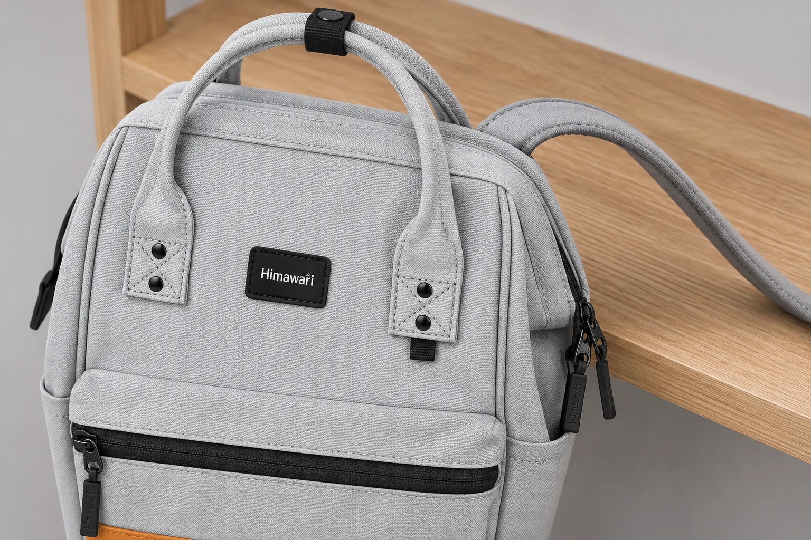
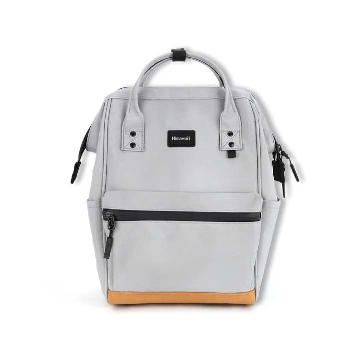

백팩 어깨끈이 반 바퀴 꼬였을 때 어느 쪽을 먼저 돌릴까
백팩을 메려는데 한쪽 끈의 모서리가 손바닥에 먼저 닿을 때가 있습니다. 가방을 내려놓고 보면 다른 쪽은 넓은 면이 보이는데 이쪽만 좁은 모서리가 앞으로 나와 있기도 합니다. 끈이 어깨를 따라 굽은 자리에서 볼 수 있는 모습입니다. 끈 한 줄이 반 바퀴 뒤집혀도 비슷해 보입니다. 풀기 전에 두 경우를 나누어 보면 멀쩡한 길이 조절부를 건드릴 일을 줄일 수 있습니다. 가방 쪽 윗부분에서부터 한쪽 끈의 넓은 면을 아래까지 따라가 보세요.
넓은 면을 따라가다 모서리가 바뀌는지 본다
No.124S 그레이는 밝은 회색 몸판, 앞의 검은 지퍼와 라벨, 아래쪽의 주황빛 바닥띠가 구분되는 미니 백팩입니다. 제조사 카탈로그의 외부 크기는 가로 22cm, 세로 33cm, 폭 14cm입니다. 가방을 빈 상태로 세우면 앞면의 방향이 비교적 쉽게 보입니다. 이 글에서 볼 곳은 그 반대쪽의 어깨끈입니다. 가방 뒤쪽을 자기 쪽으로 돌려 놓은 뒤 한쪽 어깨끈이 몸판 윗부분에 붙는 자리에서 시작하세요. 손가락 두 개로 끈의 한쪽 가장자리를 가볍게 짚어 보세요. 그 선을 따라가면 어느 부분에서 넓은 면이 안으로 들어가는지 찾기 쉽습니다.
끈이 선반 위에 누우면서 한 번 접힌 경우에는 접힌 구간만 가볍게 떠받쳐도 면이 고르게 드러납니다. 반 바퀴 꼬이면 끈을 조금 들어 올려도 위쪽에서 보던 면이 아래쪽에서 반대 방향을 향합니다. 끈 양쪽의 색이 비슷하면 패딩의 가장자리나 봉제선을 기준으로 보세요. 손가락은 어느 한쪽 선을 계속 따라갑니다. 중간에 다른 선으로 건너가면 면이 뒤집힌 위치를 지나쳐 버릴 수 있기 때문입니다. 끈이 서로 겹쳐 어느 쪽이 어느 어깨로 가는지 헷갈린다면 양쪽을 먼저 나란히 놓고 각각 붙어 있는 곳부터 확인하면 됩니다.

뒤집힌 구간에 여유를 준 뒤 한 번만 돌린다
어깨끈이 꼬인 채 팽팽하면 어느 방향이 풀리는 쪽인지 감이 오지 않습니다. 몸판을 테이블에 올려 짐의 무게를 받치고 꼬여 보이는 구간의 위아래에 두 손을 댑니다. 위쪽 연결부가 당겨지지 않도록 한 손은 그대로 두세요. 아래쪽을 받친 손으로 끈의 넓은 면이 보이는 부분을 조금 돌려 봅니다. 면이 한 줄로 펴지면서 가장자리의 교차가 줄어드는 방향이면 그대로 놓아 보면 됩니다. 교차가 하나 더 생기면 처음 자리로 되돌린 다음 반대 방향을 살펴보세요. 짧은 구간에서 작은 동작으로 확인하는 편이 손 전체로 끈을 비틀기보다 쉽습니다.
길이 조절부 근처에서만 이상해 보이는 경우도 있습니다. 위쪽 패딩 구간의 면이 이어지는데 아래 조절끈만 옆을 향한다면 조절부 앞뒤에서 끈이 어떻게 놓여 있는지 먼저 보세요. 길이가 달라 보인다는 이유로 양쪽을 한꺼번에 당기면 원래 편했던 위치까지 바뀔 수 있습니다. 기존 길이를 유지하고 싶다면 조절부 가까이의 봉제선이나 남은 끈 끝의 위치를 눈으로 기억해 두세요. 끈을 조금 놓아준 뒤에도 연결부 주변이 갑자기 꺾여 있거나 부품 사이에서 걸린다면 손으로 세게 당기기보다 제품의 사용 안내를 확인할 수 있습니다.

눈으로 폈다면 실제로 메고 한 번 더 본다
정리한 끈이 선반 위에서 평평해 보이면 백팩을 평소처럼 가볍게 메어 봅니다. 어깨 앞쪽에서 끈의 넓은 면이 옷 위에 자연스럽게 놓이는지 확인하세요. 한쪽 끝만 안으로 파고드는지도 봅니다. 얇은 셔츠를 입으면 모서리가 닿는 자리를 금방 느낄 수 있습니다. 두툼한 겉옷을 입었을 때는 거울로 끈의 방향을 보는 편이 수월할 때가 있습니다. 어느 한쪽만 다시 돌아간다면 벗는 순간부터 살펴볼 만합니다. 끈을 한쪽 어깨에서 먼저 빼면서 팔을 밖으로 돌릴 때 가방이 같이 돌아가기도 하기 때문입니다.
끈을 내려놓고 정리하는 방식도 영향을 줄 수 있습니다. 가방을 등판이 벽 쪽을 향하도록 세운 뒤 끈이 서로 겹치지 않게 벌려 놓으면 다시 잡을 때 어느 쪽인지 구분하기 쉽습니다. 외투와 가방을 같은 걸이에 둘 때는 소매 안으로 끈 한쪽이 들어가 있지 않은지 살펴보세요. 팔을 다시 넣는 쪽에 끈의 넓은 면이 먼저 오도록 두면 다음에 메는 동작도 간단해집니다. 주로 어느 손으로 가방을 들어 올리는지까지 떠올리면 매번 같은 쪽이 뒤집히는 단서가 보일 수 있습니다.
같은 쪽이 계속 돌아가는지 보려면 가방을 정리한 뒤 바로 다시 들어 보세요. 테이블의 오른쪽에 두었을 때와 왼쪽에 두었을 때 손이 잡는 끈의 면이 달라질 수 있습니다. 먼저 가방 뒤를 자기 쪽으로 향하게 놓고 평소처럼 끈을 집어 봅니다. 손등의 방향을 바꿀 때 끈의 모서리도 함께 앞을 향하나요? 그럴 때는 가방을 손잡이로 조금 돌려 보세요. 끈의 넓은 면이 손바닥 쪽으로 오면 그때 잡으면 됩니다. 어떤 손으로 집을지까지 바꿀 필요는 없습니다. 내려놓는 방향만 조정해도 같은 손으로 끈을 집기 편한 자리를 찾을 수 있습니다.
가방을 벽에 기대 세워 두는 편이라면 끈이 등판과 벽 사이에 눌린 채 남는지도 확인하세요. 다음번에 가방을 들 때 끈을 뒤에서 꺼내는 손과 위에서 바로 집는 손의 방향이 달라집니다. 한쪽이 벽에 눌렸다면 위 손잡이를 들어 가방을 먼저 조금 앞으로 옮기면 원래 길이를 유지한 채 끈을 두 줄 눈앞에 둘 수 있습니다.
끈이 꼬였을 때 바로 조절끈을 당기기보다 가방 쪽에서 한 면을 따라가 보세요. 꺾인 위치를 찾았으면 가방을 받쳐 끈을 느슨하게 둡니다. 끝에서 면이 어떻게 도는지 보면 어느 쪽으로 풀지 결정하기가 쉽습니다. 평소 길이가 편했다면 길이부터 고치지 않아도 됩니다. 남는 끈과 조절부는 착용 후 실제로 확인할 문제가 보일 때 하나씩 보면 됩니다.